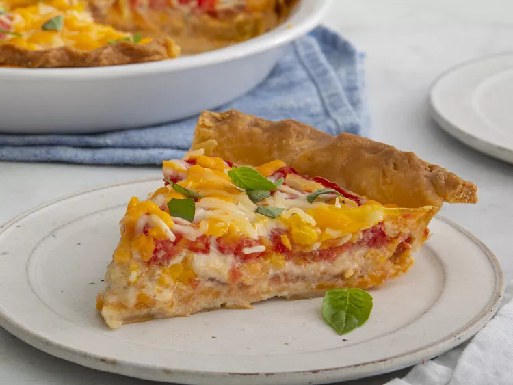

Southern Tomato Pie
Tomato slices are juicy and mix in well with the creamy/cheesy "custard" in this Southern-inspired tomato pie. The blind baking method helps keep the crust nice and crunchy on the bottom.

Ingredients
- ½ (14.1 ounce) package refrigerated pie crusts, at room temperature
- 3 medium tomatoes
- 1 ¼ teaspoons kosher salt, divided
- ½ cup mayonnaise
- 2 ounces cream cheese, softened
- 1 ½ cups shredded sharp Cheddar cheese, divided
- 1 large egg, lightly beaten
- ¼ teaspoon ground black pepper
- ¼ cup shredded Parmesan cheese
- 1 tablespoon thinly sliced fresh basil